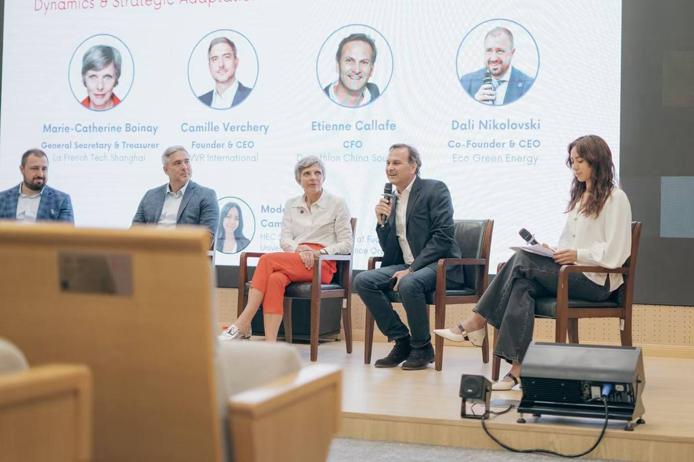
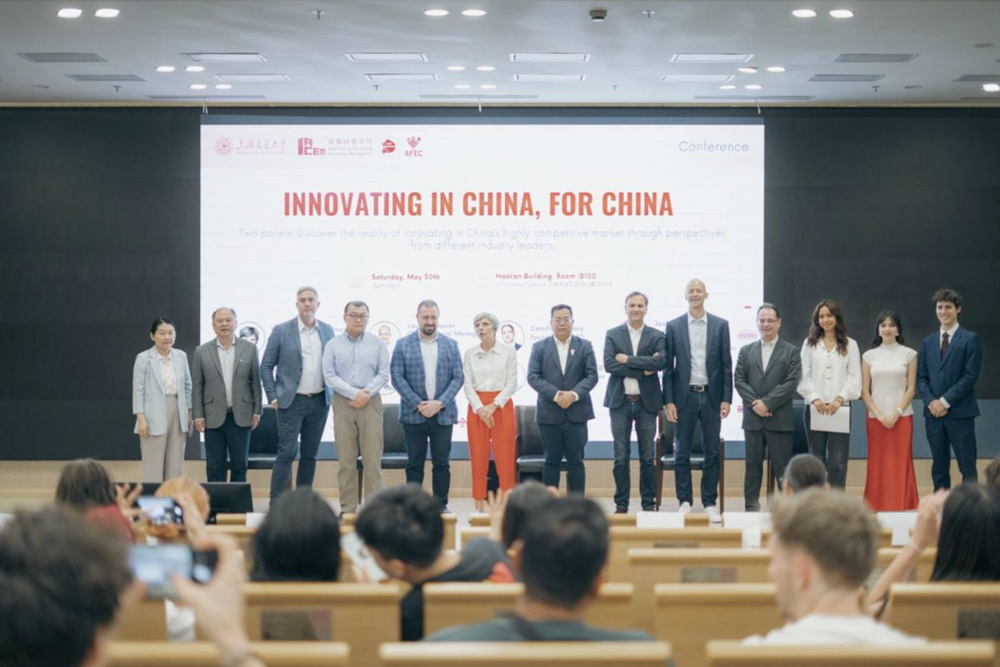

Master in Management student at HEC Paris. I design and run events that bring founders, executives, doctors and students into the same room, mostly around health and AI.
Health · Defence3–4 March 2027 · Parc Floral de Paris
Human Layer, a 24-hour hackathon for MedInTechs 2027
Co-lead, with MedInTechs, MyTwin Lab, HEC IA and MedX
Two teams of 24 students from engineering, medical and business schools build tools to track and anticipate the physical and mental state of firefighters, soldiers, rescuers and doctors working in extreme conditions. A live scoreboard, surprise challenges and a filmed final in the MedInTechs conference room.
48students, 2 teams
4field use cases
€19–31kbudget to raise
4partner organisations
Proposed the hackathon to the president of MedInTechs, who wanted one but had no format or partners yet.
Designed the scenario, the four use cases, the rules, the jury criteria and the prizes.
Built a three-tier sponsorship offer (€2.5k to €10k), lead outreach to defence and health companies, and own the legal and filming framework.
International30 May 2026 · Shanghai Jiao Tong University
Innovating in China, For China
Moderator of Roundtable 1, AFEC × SJTU Antai College × AISU
A three-hour conference at Shanghai Jiao Tong University's Antai College, bringing eight industry leaders and more than 150 students and young professionals together to discuss how innovation works in one of the world's fastest-moving markets.
Moderated the first roundtable with the CFO of Decathlon China, the CEOs of VVR International and EcoGreen Energy, and La French Tech Shanghai.
Sourced, contacted and briefed speakers from Gerflor, Sogefi and Eramet, and wrote the briefing documents for every speaker.
Prepared the questions and opening of the roundtable, grounded in market data (foreign car brands in China fell from 60.8% to 34.8% market share between 2019 and 2024).


AI2025–2026 · Paris
HEC IA dinners
Lead of the dinners programme, HEC IA
I designed the dinners programme of HEC IA, the AI society of HEC Paris, on a simple idea: the conversations that matter happen around a table. Two formats, each with one goal: open rooftop dinners of 15 to 20 students with three or four guests, to give the society visibility, and partner dinners for members, to build partnerships.
60+leaders in the guest pipeline
Welcomed CEO-level guests from Bain & Company, Safran AI and AMI Labs.
Built a pipeline of 60+ founders, investors and AI leaders, from Mistral AI to Hugging Face.
Designed a preparation routine for every dinner: a brief before, a follow-up within 48 hours, and one owner per contact.
What I learned: one format, one objective. Small tables create far more value than large lecture halls, and the real work starts after the dinner.
AI2025–2027 · HEC Paris
HEC IA hackathons and AI career fair
Head of AI & Consulting, Executive Board of HEC IA
50participants per hackathon
30AI companies at the fair
Organised hackathons for 50 participants, managing team structure, budget and logistics.
Co-launching an AI career fair connecting HEC and École polytechnique students with 30 AI companies, including Mistral AI.
Health2026–2027 · HEC Paris
MedX events programme
Head of Events, Executive Board of MedX, the health society of HEC Paris
Run the society’s health events programme: conferences, founder talks and networking dinners.
Mobilise medical students and healthtech speakers, including for the Human Layer hackathon.